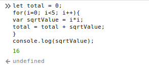

JavaScript es un lenguaje de programación interpretado, de alto nivel y multi-paradigma, que tiene por objetivo brindar dinamismo a los sitios web; no obstante este también es utilizado en entornos y tecnologías como base de su funcionamiento (ej: Node.js). Este lenguaje está basado en el estándar normativo ECMAScript.
JavaScript, como ya se mencionó, es multi-paradigma, siendo sus pricipales vertientes la programación funcional, programación imperativa y el paradigma orientado a objetos. La sintaxis básica del mismo es similar a Java y C++, con el fin de minimizar su curva de aprendizaje; sentencias como if, try...catch, for, while y switch, funcionan de forma similar como lo hacen en dichos lenguajes.
Las capacidades dinámicas de JavaScript incluyen construcción de objetos en tiempo de ejecución, listas variables de parámetros, variables que pueden contener funciones, creación de scripts dinámicos, introspección de objetos, y recuperación de código fuente [MDN].
Lectura complementaria: ¿Qué es JavaScript? [MDN]
En primer lugar, hay que comprender que una variable es un contenedor para algún valor cualquiera a utilizar, como podría ser un número, una cadena de texto, etc. Donde su característica pricipal es que este valor contenido puede cambiar durante el tiempo de ejecución.
Otra característica importante acerca de las variables, es que ellas no solo almacenan datos primitivos, sino que pueden llegar a contener estructuras de datos complejas, objetos, e incluso definiciones de funciones. Dicho lo anterior, se debe de realizar una diferencia, entre el valor y la variable, donde esta última simplemente sirve de contenedor, y no es el valor en sí.
Declarar una variable.
Para poder hacer uso de una variable, primero debe de declarar dentro del script. Esto se logra con la palabras reservadas var o let seguido de un identificador o nombre para la misma.
var birthDate;
let viewHolder;
var contAux;
let progWeb;
Inicializar una variable.
Al igual que en la mayoría de lenguajes de programación, el operador de asignación dentro de JavaScript es el igual (=). Su uso es trivial, donde se iguala una variable a un valor específico; Si una variable es inicializada sin haber sido definida, se comportará de manera global.
birthDate = '2018-09-21';
contAux = 0;
comp2 = true //Global
progWeb = "Este es el labo 05";
Cabe resaltar que se puede Inicializar una variable mientras la declaramos.
var offsetX= 45;
var offsetY= 12;
var volInit = 2;
Operar variables.
De igual forma que muchos lenguajes de programación, JavaScript cuenta con las operaciones matemáticas básicas (+ - * / %) y comparativas (< > == !=), para la manipulación primitiva de variables. Ademas, conceptos como contadores y acumuladores, expresiones regulares, etc, también son aplicables en este ámbito.
offsetX = 54 + posX;
impuestos = valor * 1.13;
total = total + impuestos;
contAux = contAux + 1;
comp2 = aux1 <= aux2;
Difrencia entre let y var
La diferencia fundamental entre ambas instruciones, es el alcance que otorgan a las variables. La instrucción let limita el contexto de la variable al bloque, declaración, sentencia o expresión en que se este utilizando. Por ejemplo:
let total = 0;
for(i=0; i<5; i++){
let sqrtValue = i*i;
total = total + sqrtValue;
}
La variable sqrtValue solamente puede ser accesible desde el contexto encerrado en el bucle for. Si tratamos de acceder a esta fuera de su contexto, será disparado un error.

Por su parte la instrucción var limita la variable a un contexto local dentro de una función sin importar el contexto particular del bloque o sentencia en la que se esté utilizando. Aplicando el mismo ejemplo anterior con var:
let total = 0;
for(i=0; i<5; i++){
var sqrtValue = i*i;
total = total + sqrtValue;
}
Ahora la variable sqrtValue pertence al contexto de la función y no al bloque for, por lo que facilmente se puede acceder a ella desde otro contexto dentro de la misma función.

Tip, Nombres de variables.
A la hora de elegir un identificador para las variables se debe de garantizar que este cumpla su función de la mejor manera. Para ello se recomeinda seguir los siguientes estándares:
- Ultilizar solamente carateres alfanuméricos (A-Z a-z 0-9) y el guión bajo.
- Evitar guión bajo al inicio del identificador. Está reservado en JS.
- No inciar el identificador con un número. Causará error.
- Usar nombres representativos para las variables, según el contenido que almacenan.
- Usar minuscula en la primera letra. Si es una composición de varias palabras, escribirlas juntas y aplicar mayúsculas a las primeras letras de cada una (Ej: contAux).
- Tener preacución ya que los identificadores son "key-sensitive".
- No utilizar palabras reservadas como identificadores.
- myVariable
- age
- init
- gameInit4
- cont_aux
- MyAge
- myage
- 99var
- _initvar
- let
Lectura complementaria: Storing the information you need — Variables [MDN]
En términos generales, una función es un "subprograma" que puede ser llamado por código externo (o interno en caso de recursión) a la función. Al igual que el programa en sí mismo, una función se compone de una secuencia de declaraciones, que conforman el llamado cuerpo de la función. Se pueden pasar valores a una función, y la función puede devolver un valor. [MDN]
En JavaScript existen diversas formas de declarar una función, entre las que figuran:
La instrucción function
Esta instrucción declara una función con un identificador y parámetros específicos. Posee la siguiente sintaxis:
function <name> ([Param1,[Param2,[Param3[,...]]]]){
//instructions
}
El operador function
Este operador es parecido a la instrucción anterior, con la diferencia que este es utilizado para declarar funciones dentro de expresiones, es decir ser almacendas en variables o procesos mayores. Su sintaxis es la siguiente:
function [name] ([Param1,[Param2,[Param3[,...]]]]){
//instructions
}
Ejemplos:
var procesoA = function (i,j){
return i*j;
}
elementX.onclick(function (i,j){
return (i*j)/(i);
});
La notación flecha.
Esta notación es la simplificación de la definición y sintaxis de una función; en general tiene las misma propiedades que el operador funtion, por lo que su utilidad reside en ser asignada a expresiones y procesos mayores. Fue implementada a partir de ECMAScript 6.
([Param1,[Param2[,...]]]) => {
//instructions
}
Aplicando esta notación a los ejemplos anteriores:
var procesoA = (i,j) => {
return i*j;
}
elementX.onclick((i,j) => {
return (i*j)/(i);
});
Lecturas complementarias: